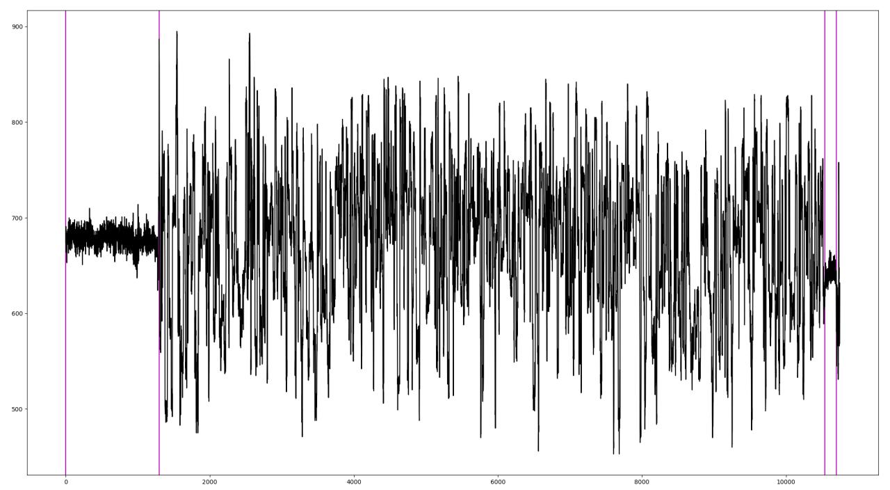

Segmenter
Background
Nanopore signal can have larger structurally identifiable regions. These regions can be separated into 3 categories: Stall, homopolymer, regular DNA/cDNA sequence. Identifying the stall at the start of a nanopore read allows for extraction, visualisation, and comparison of the regular sequence. Finding homopolymer sequences can aid in identifying full lenght cDNA reads, or breaking up contatonated reads. Using segmenter in conjunction with MotifSeq allows for simple targeting within the raw signal. Selected regions can then be, for example, used as input to various classical comparison methods, such as Dynamic Time Warping (DTW), or used as training sets for Machine/Deep Learning techniques.
The core algorithm calculates the median of the full read, sets thresholds about the median using a fraction of the standard deviation, and uses a sliding window to find regions of signal which stay inside the threshold region. Error correction and segment merging helps handle the noisy nature of the raw signal data.
This is a demonstration for analysing raw signal data. The algorithm was developed out frustration with the overcomplicated or incompatible methods employed in other time analysis fields, such as sound wave or ECG detection. It is has undergone minimal optimisation, though still gives surprisingly good results.

Getting Started
Segmenter takes a flat file list of fast5 paths, a top directory of file paths, or a signal file from SquigglePull. It can be set to only detect stalls, or it can detect homopolymers within a distance of the start of a read depending on read structure. Many of the core arguments in the algorithm can be modified with arguments for tuning output.
Instructions for use
Segmenter has a built visualisation using -v. This is very helpful in tuning the parameters. Default values are a rough estimate for getting some results from most reads.
Quick start
Identify any segments in folder and visualise each one
Use f to full screen a plot, and ctrl+w to close a plot and move to the next one.
python segmenter.py -p ./test/ -v
Stall identification
python segmenter.py -s signals.tsv.gz -ku -j 100 > signals_stall_segments.tsv
Full usage
usage: segmenter.py [-h] [-f F5F | -p F5_PATH | -s SIGNAL] [-n NUM] [-e ERROR]
[-c CORRECTOR] [-w WINDOW] [-d SEG_DIST] [-t STD_SCALE]
[-v] [-g] [-b GAP_DIST] [-k] [-u] [-l STALL_LEN]
[-j STALL_START] [-scale_hi SCALE_HI]
[-scale_low SCALE_LOW]
segmenter - script to find obvious regions in squiggle data
optional arguments:
-h, --help show this help message and exit
-f F5F, --f5f F5F File list of fast5 paths
-p F5_PATH, --f5_path F5_PATH
Fast5 top dir
-s SIGNAL, --signal SIGNAL
Extracted signal file from squigglePull
-n NUM, --Num NUM Section of signal to look at - default 0=all
-e ERROR, --error ERROR
Allowable error in segment algorithm
-c CORRECTOR, --corrector CORRECTOR
Window size for increasing total error correction -
better long segment detection
-w WINDOW, --window WINDOW
Minimum segment window size to be detected
-d SEG_DIST, --seg_dist SEG_DIST
Maximum distance between 2 segments to be merged into
1
-t STD_SCALE, --std_scale STD_SCALE
Scale factor of STDev about median
-v, --view view each output
-g, --gap Turn on gap distance for stall to polyTAil
-b GAP_DIST, --gap_dist GAP_DIST
Maximum distance between stall and polyTAil segment -
for 10X/dRNA
-k, --stall Turn on stall detection - must be present
-u, --test Run Tests
-l STALL_LEN, --stall_len STALL_LEN
Minimum percentage of minimum window segment for
initial stall segment
-j STALL_START, --stall_start STALL_START
Maximum distance for start of stall segment to be
detected
-scale_hi SCALE_HI, --scale_hi SCALE_HI
Upper limit for signal outlier scaling
-scale_low SCALE_LOW, --scale_low SCALE_LOW
Lower limit for signal outlier scaling